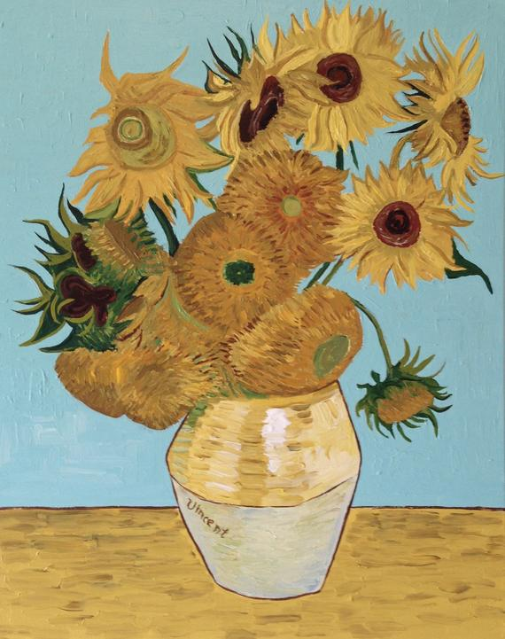

artworks
Contrary to popular belief, Van Gogh's artistic
career lasted only two years. In this time he made an estimated
total of 2,100 artworks, including around 860 pil paintings. During
these two years he was in a height of depression and poverty,
his little brother Theo supporting him financially as they exchanged
letters. His art in the later years is more easily recognizable, as he
applies use of small paint strokes instead of smooth blending of colors.

Van Gogh's painting in the Sunflower series